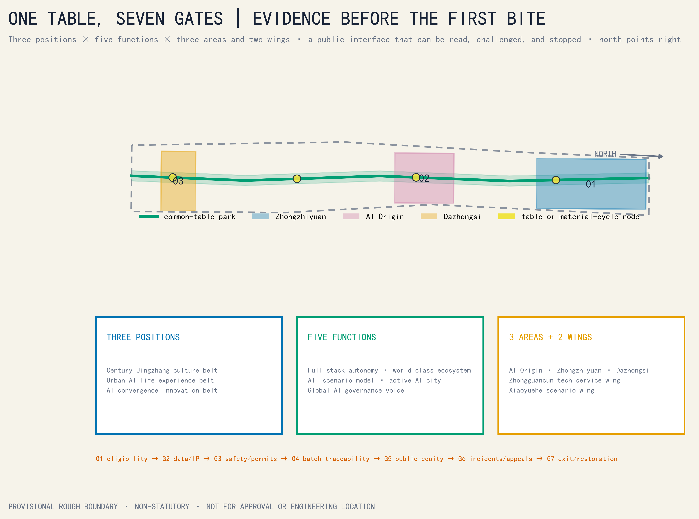
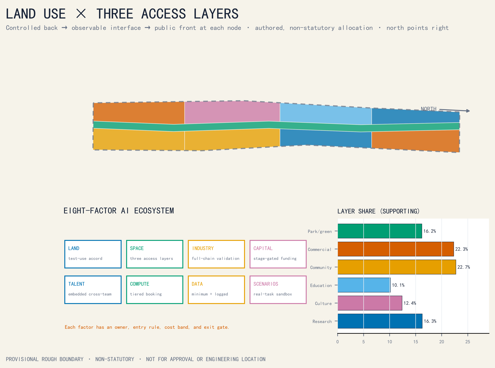
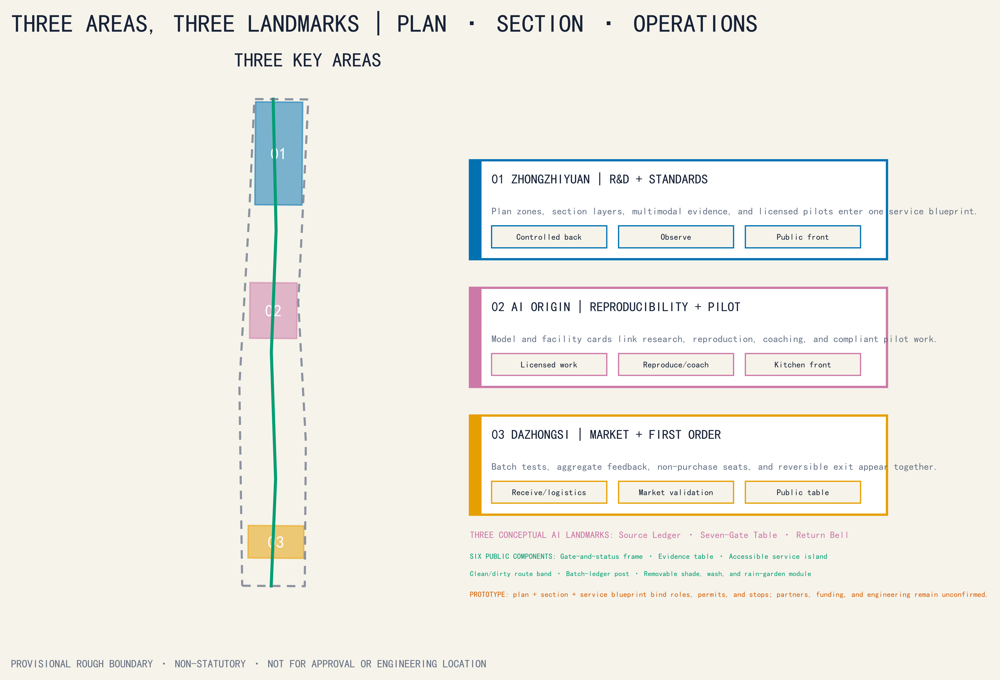
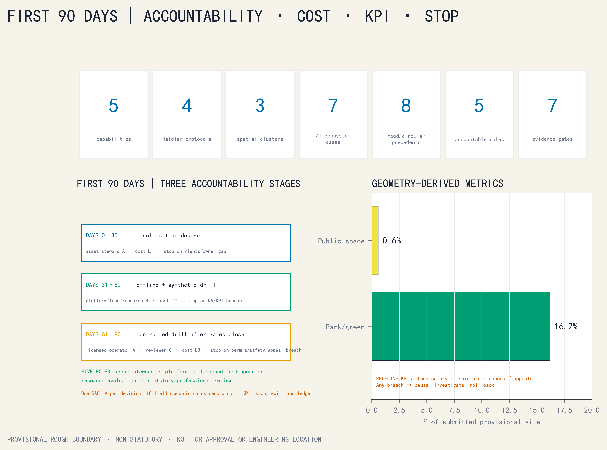
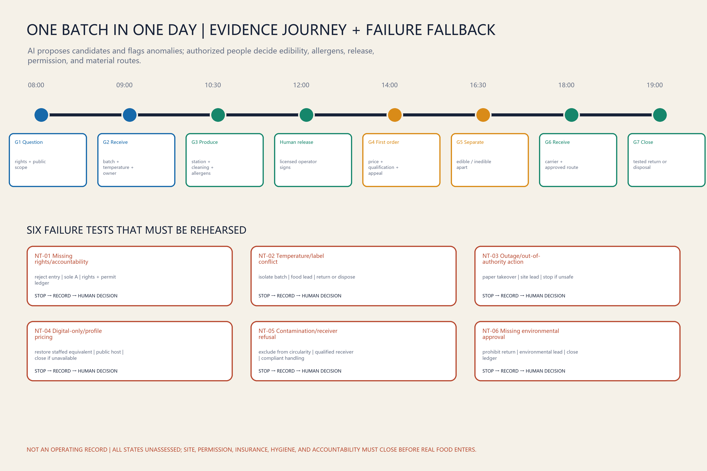
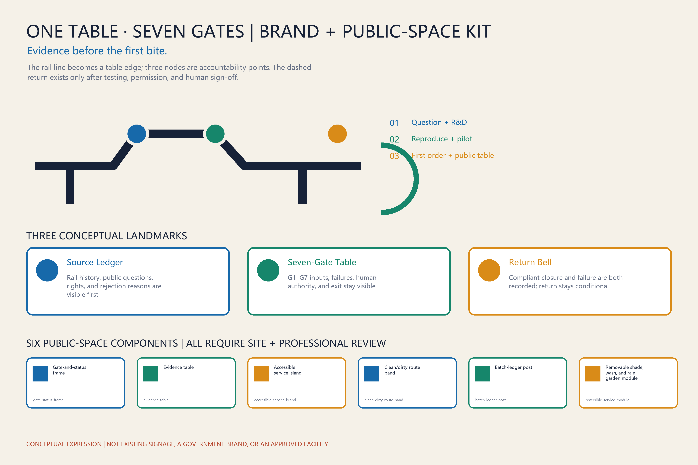
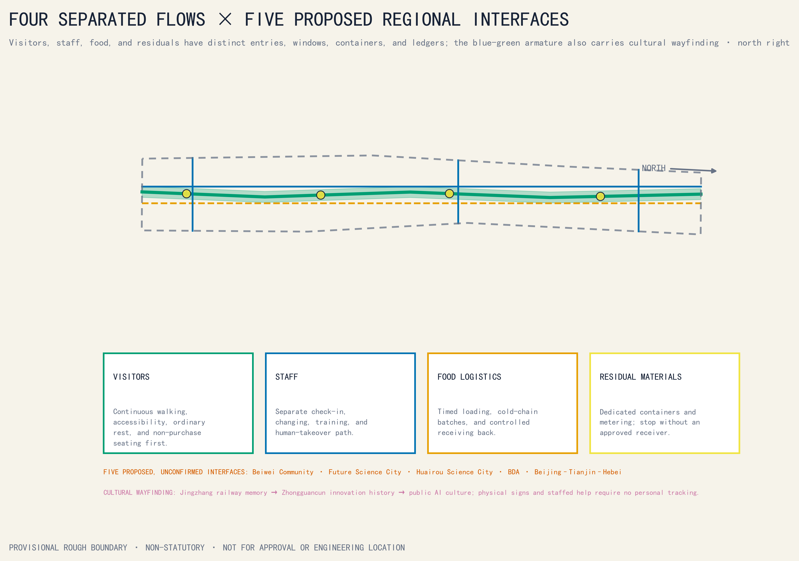

Centennial Jingzhang culture | urban AI life | AI convergence
TASKBOOK CLOSED ON ONE PAGE
full stack | global ecosystem | AI+ scenarios | active city | governance
AI Origin | Zhongzhiyuan | Dazhongsi | enterprise services | Xiaoyuehe scenarios
Overview map | three nested extents | focus areas | land-use zones | walking and mobility | blue-green public space | buildings (survey pending) | renewal projects | AI scenarios | task coverage | self-check status | sources | assumptions
Site area 11,412,825.39 m² · Green ratio 16.18% · Public-space ratio 0.57%
7global AI ecosystem cases
8ecosystem factors
12scenario protocols
5regional interfaces
Seoul | Abu Dhabi | Montréal | Paris | Tübingen | Toronto | Singapore
SPATIAL + INDUSTRY EVIDENCE



90-DAY MINIMUM PILOT
Evidence, rights, accessible co-design, permit path; no real food.
Synthetic, tabletop, and offline rehearsals; no public AI service.
Controlled rehearsal only after accountability, insurance, hygiene, site, and permission close.

ONE BATCH, ONE BRAND, A PUBLIC EXPERIENCE THAT CAN EXIT


FOUR FLOWS, CULTURAL PATH, AND COLLABORATION INTERFACES

EVIDENCE BOUNDARY
Official polygons, statutory controls, surveyed buildings, road redlines, utilities, fire, contamination, real operators, permits, budgets, and performance remain unavailable. Failure can pause, reduce, or end the pilot.